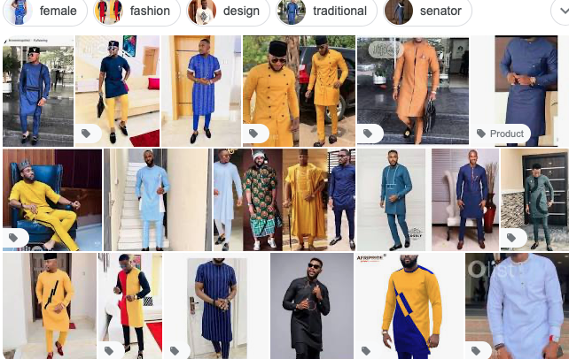

Native wears are very popular among stylish men in Africa and they are especially famous in Nigeria. People always look fabulous wearing their native style clothes. Also, a lot of celebrities like to wear Nigerian native fashion styles.  They look gorgeous in these clothes. For example, look at the Nigerian artist, The Game. Have you seen the Nigerian native attire styles embraced by foreigners?